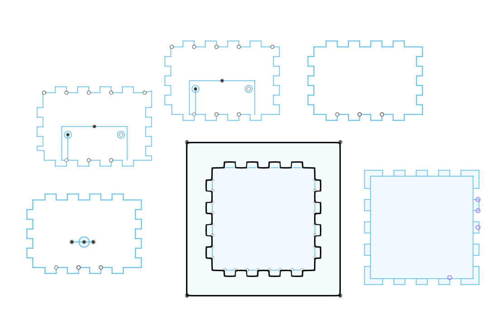

Sensor Casing
This model forms the central part of the design. The lower section is a shaft that contains the slip ring, enclosed within the wooden box. The upper section of the shaft supports the sensor’s outer casing, which also acts as the mounting point for the second stepper motor. This motor is directly attached to the sensor casing, allowing it to rotate.
Download Fusion FileCentral Consol
This model is the central console, it is designed to skew into the base wooden box and act as support for the entire structure. The model houses an offset Stepper motor allowing the shaft to occupy the central space combined by a slip ring to stop the wires from tangling. Additionally the central cavity allows for a ball bearing to be pressed into the model creating a smoother turn. The printed grooves create a place for the wires to go helping to limit the chaos of wires.
Download Fusion File
Wooden Base Box
This is the .DFX file for the base of the design, the wooden box. I used a laser cutter to cut 6mm wood, relying solely on friction to hold it together. The top of the box features a 21mm diameter hole for the shaft, and it spans 98.4mm from side to side, allowing the central console to fit snugly inside. The remaining space inside the box is used to store electronics for both the bottom and top microcontrollers. On one side, there’s a hole for the power cable, which connects directly to the custom PCB (thanks, Booby) that converts 12V down to 5V.
Download DXF